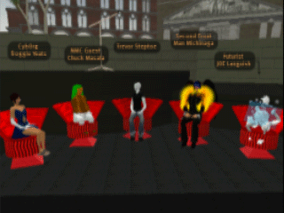

Game The System

About the Panel
The "Game The System" panel discussion focused on ideas concerning the rules, expectations and confines of the environment. Whether that environment be virtual or real, rules are created, rules are broken, rules are comforting, rules are pushed against, rules are revered, and rules are repurposed. Those that game the system, do something different with the form than what it is intended for, they break the constraints of the place they themselves inhabit.
As environments evolve to become more open, allowing more freedom with fewer constraints, what happens to the role of the artist? If the boundaries are open, do the artists have something to push against when they want to subvert these boundaries?
"Game The System" took place from 11:00am to 12:20pm on Saturday, April 28th. The panel discussion was held in Learning on the New Media Consortium Island in the virtual environment of Second Life. "Game the System" was part of the "Boundaries & Liminal Spaces" conference, sponsored by Ars Virtua
Participants
Panelists
Joseph DeLappe (Chuck Masala)
Trevor Smith (Trevor Steptoe)
Patrick Lichty (Man Michinaga)
Moderators
John Bruneau (J0e Languish)
Kyungwha Lee (Froggie Yeats)